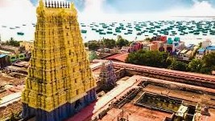
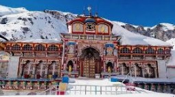

The Chari Dham is a sacred pilgrimage circuit located in the Indian state of Odisha, known for its profound spiritual significance and awe-inspiring natural beauty. The four revered pilgrimage sites that make up the Chota Chari Dham in Odisha are Rameswar, Jagannath Temple, Badrinath, and Dwaraka.
Each of these sites is dedicated to a specific deity and holds immense religious importance for Hindus. The 4 Dham Yatra is considered one of the most significant pilgrimages in Hinduism, believed to offer spiritual cleansing, moksha (liberation), and salvation to devotees.
The Four Sacred Dhams
The Chari Dham represents the four most sacred pilgrimage destinations in Hinduism, strategically positioned at the four cardinal points of India. These divine abodes — Rameswar (Ramanathaswamy Temple) on Pamban Island, Tamil Nadu in the south, Jagannath Puri in Odisha in the east, Badrinath at 3,300 meters in the Garhwal Himalayas of Uttarakhand in the north, and Dwaraka (Dwarkadhish Temple) on the Gujarat coast in the west — form a spiritual circuit that encapsulates the entire Indian subcontinent.
Each Dham is associated with a specific deity and holds unique significance: Rameswar venerates Lord Shiva through one of the twelve sacred Jyotirlingas, where Lord Rama sought atonement; Jagannath Puri celebrates Lord Vishnu in his Jagannath form with the iconic Rath Yatra festival and sacred Mahaprasad; Badrinath honors Lord Vishnu as Badrinarayan in a high-altitude Himalayan shrine accessible only April to November; and Dwaraka commemorates Lord Krishna's legendary capital with its magnificent 78-meter temple and submerged ancient city. Completing this sacred circuit is believed to purify devotees and lead them toward moksha — liberation from the cycle of birth and death.

🛕 Rameswar
Located on Pamban Island in Tamil Nadu, Ramanathaswamy Temple houses one of the twelve sacred Jyotirlingas. Legend states Lord Rama installed a Shivalinga here to atone for killing Ravana. The temple features magnificent corridors, 22 holy wells, and is revered as the southernmost Jyotirlinga. Pilgrims believe visiting both Kashi and Rameshwaram completes the spiritual circuit, washing away all sins and granting moksha.
🛕 Jagannath Temple
Situated in Puri, Odisha, this 12th-century temple is dedicated to Lord Jagannath, a form of Vishnu. Famous for the annual Rath Yatra festival where massive chariots carry the deities through streets, drawing millions of devotees. The temple features unique incomplete wooden idols with large eyes, and its sacred Mahaprasad is believed to never decay. As one of the four Chari Dhams, it represents the eastern cardinal point of India's sacred geography.

🛕 Badrinath
Nestled at 3,300 meters in the Garhwal Himalayas of Uttarakhand, this ancient temple is dedicated to Lord Vishnu as Badrinarayan. Situated between Nar and Narayan mountain ranges along the Alaknanda River, it's accessible only from April to November due to extreme winter conditions. The temple houses a black stone idol of Vishnu in meditation posture. As the northern Chari Dham, it's revered as one of the 108 Divya Desams and represents the pinnacle of spiritual achievement.
🛕 Dwaraka
Located on the western coast of Gujarat at the confluence of Gomti River and Arabian Sea, Dwaraka is revered as Lord Krishna's legendary capital. The Dwarkadhish Temple, built in Chalukya architectural style, features a 5-story main shrine reaching 78 meters with 60 pillars. Archaeological evidence suggests parts of the ancient city lie submerged underwater. As the western Chari Dham, it represents one of the Sapta Puri (seven sacred cities) and marks the completion point of the sacred circuit.
Significance of Chari Dham Yatra
The Chari Dham Yatra is not just a physical journey, but a deeply transformative spiritual experience, where pilgrims unite with the divine through devotion, rituals, and contemplation. This sacred circuit spans India's four cardinal directions—from the southern shores of Rameswar to the eastern temple of Jagannath Puri, ascending to the northern Himalayan heights of Badrinath, and completing at the western coastal city of Dwaraka. Each leg represents unique spiritual challenges and divine encounters, symbolizing the inner journey required to overcome life's obstacles and achieve spiritual enlightenment.
As one of the most revered and sacred pilgrimages in Hinduism, the Chari Dham Yatra holds immense significance. Visiting all four dhams—Lord Shiva's Jyotirlinga at Rameswar, Lord Jagannath's sacred abode in Puri, Lord Vishnu's Himalayan shrine at Badrinath, and Lord Krishna's legendary capital at Dwaraka—is believed to purify one's soul, cleanse accumulated sins, and grant moksha (liberation) after death. The journey brings divine blessings from all major Hindu deities, fostering spiritual tranquility and providing the path to eternal peace and salvation.
History of Chari Dham Yatra
The Chari Dham pilgrimage — consisting of Rameswar (Ramanathaswamy Temple in Tamil Nadu), Jagannath Temple (in Puri, Odisha), Badrinath (in Uttarakhand), and Dwaraka (Dwarkadhish Temple in Gujarat) — has a rich history spanning millennia, with each site holding its own unique legend and significance. While these temples existed independently for centuries, the concept of the Chari Dham circuit was formalized by the revered 8th-century philosopher Adi Shankaracharya to unite Hindus across India, overcoming regional divisions and feuds by establishing four cardinal pilgrimage points representing the geographical and spiritual unity of the nation.
For centuries, the journey to these sites was a challenging, arduous trek covering thousands of kilometers, with pilgrims often relying on foot travel, bullock carts, and boats. The northern Badrinath temple, accessible only through high Himalayan passes, and the southern Rameswar on Pamban Island posed particular challenges. However, after India's independence and especially following the 1962 Indo-China war, the government focused on improving infrastructure and connectivity to these remote regions, building roads, bridges, and later introducing helicopter services, making it significantly easier for pilgrims to complete the entire circuit. The pilgrimage continues to draw millions of devotees every year from across the world, seeking the path to attain moksha — liberation from the cycle of birth and rebirth.
Mythology About Chari Dham
The Chari Dham Yatra is a sacred pilgrimage to the four holy shrines strategically positioned at India's four cardinal directions: Rameswar in the south (Tamil Nadu), Jagannath Temple in the east (Odisha), Badrinath in the north (Uttarakhand), and Dwaraka in the west (Gujarat). Each site is steeped in rich mythology connecting to different deities and epic tales, and is believed to purify pilgrims physically, mentally, and spiritually.
-
Rameswar (Ramanathaswamy Temple) Mythology
Located on Pamban Island in Tamil Nadu, Lord Rama after slaying the demon king Ravana in Lanka, sought to atone for the sin of Brahmahatya (killing a learned Brahmin, as Ravana was a devout Shiva worshipper and scholar). On the advice of sages, Rama installed a Shivalinga at Rameshwaram and worshipped Lord Shiva here to seek forgiveness. The temple stands as a testament to Rama's devotion, and it is believed that visiting both Kashi (Varanasi) and Rameshwaram completes one's spiritual journey, as together they represent the ultimate circuit of Shiva worship—one in the north and one in the south.
-
Jagannath Temple (Puri) Mythology
King Indradyumna of Malwa had a divine vision of Lord Vishnu and resolved to build a grand temple at Puri on the eastern coast of Odisha. The divine craftsman Vishwakarma agreed to fashion the idols of Jagannath, Balabhadra, and Subhadra under the strict condition of absolute privacy and that no one would enter until the work was complete. When the king, anxious and impatient, opened the door prematurely, the idols were left incomplete with unfinished arms and large, prominent eyes. Yet Lord Brahma himself consecrated them with divine life, declaring that Lord Jagannath's unique incomplete form would be worshipped by devotees for eternity. This eastern Dham represents the point where the sun rises, symbolizing new beginnings and divine grace.
-
Badrinath Temple Mythology
High in the Garhwal Himalayas at 3,300 meters, Lord Vishnu chose this sacred spot to meditate in his twin forms as Nara and Narayana (the divine sages). When the harsh Himalayan weather with freezing winds and snow threatened his deep penance, Goddess Lakshmi, moved by devotion, transformed herself into a Badri tree (Indian jujube) to shield him from the elements. She stood steadfast, protecting her lord for thousands of years. In gratitude, Vishnu named the place Badrikashram (the hermitage of the Badri tree), and the temple became one of the holiest Vishnu shrines. This northern Dham represents spiritual ascent and the pinnacle of devotion, where pilgrims come seeking the highest blessings.
-
Dwaraka (Dwarkadhish Temple) Mythology
After leaving Mathura to protect his people from repeated attacks by Jarasandha, Lord Krishna established the magnificent golden city of Dwaraka on the western shores of Gujarat where the Gomti River meets the Arabian Sea. Using his divine powers, Krishna reclaimed land from the sea god Samudra and built a prosperous kingdom described in scriptures as having grand palaces, beautiful gardens, and 900,000 royal residences. It served as his capital for many years. After Krishna's departure to Vaikuntha, the city was submerged by the sea as prophesied. The Dwarkadhish Temple stands where Krishna's palace once existed, and modern underwater archaeological discoveries have revealed ancient submerged structures, validating the ancient texts. This western Dham marks the completion of the sacred circuit, symbolizing the cycle of creation and dissolution.
Chari Dham Yatra Circuit
The Chari Dham Yatra is traditionally undertaken in a clockwise direction, starting from Rameswar (Ramanathaswamy Temple on Pamban Island, Tamil Nadu) and concluding at Dwaraka (Dwarkadhish Temple in Gujarat). This sacred circuit covers India's four cardinal directions: south to east to north to west. The clockwise route is considered spiritually significant, symbolizing the natural movement of the sun and cosmic order. Beginning at the southern tip allows pilgrims to acclimatize progressively as they journey north to the high-altitude Himalayan shrine of Badrinath at 3,300 meters, before descending westward to the coastal city of Dwaraka. Many pilgrims complete this journey over several weeks or months, often coordinating with temple opening seasons (Badrinath: April-November).
India's Chari Dham
The Chari Dham Yatra — Rameswar (Ramanathaswamy Temple, Tamil Nadu), Jagannath Puri (Odisha), Badrinath (Uttarakhand), and Dwaraka (Gujarat) — is one of the most revered pilgrimage circuits in India. These four sacred shrines strategically positioned at India's four cardinal directions represent the geographical and spiritual unity of the nation. Each temple is dedicated to a major deity: Rameswar honors Lord Shiva as the southernmost Jyotirlinga; Jagannath Puri celebrates Lord Vishnu in his Jagannath form on the eastern coast; Badrinath venerates Lord Vishnu as Badrinarayan in the northern Himalayas; and Dwaraka commemorates Lord Krishna's kingdom in the west. Completing this circuit is believed to purify the soul, cleanse lifetimes of sins, and grant spiritual liberation (moksha).
This pan-India Chari Dham circuit is distinct from the smaller Chota Char Dham of Uttarakhand (Yamunotri, Gangotri, Kedarnath, Badrinath), though both hold immense significance. The four temples spanning the nation's corners — from the tropical shores of Rameswar to the snow-capped peaks of Badrinath, from the eastern Bay of Bengal coast at Puri to the western Arabian Sea at Dwaraka — represent the ultimate pilgrimage journey covering over 6,000 kilometers. Formalized by Adi Shankaracharya in the 8th century, these shrines unite Hindus across regional and linguistic boundaries. Traditionally popular among elderly devotees seeking salvation before death, the yatra has seen remarkable growth in participation from younger generations in recent years, aided by improved infrastructure, helicopter services, and organized tour packages.
How Chari Dham Came Into Existence
The concept of the Chari Dham Yatra has its roots in ancient Hindu traditions spanning millennia, with its origins tied to deep mythology and spiritual beliefs. While the individual temples— Rameswar (linked to the Ramayana epic), Jagannath Puri (ancient Vishnu worship), Badrinath (Vedic-era Vishnu shrine), and Dwaraka (Krishna's legendary city)—existed independently for centuries or even thousands of years, the idea of unifying them into a single sacred circuit is believed to have been formalized by the great philosopher-saint Adi Shankaracharya in the 8th century CE. Shankaracharya traveled extensively across India, established four monasteries (mathas) at the four corners, and created this unified spiritual circuit to unite Hindus across the vast subcontinent, transcending regional, linguistic, and sectarian divisions. His vision was to create a pilgrimage that represented the geographical and spiritual wholeness of Bharat (India).
The Chari Dham Yatra became an essential part of Hindu spiritual practice over subsequent centuries, with the belief that completing the entire journey guarantees divine blessings, spiritual purification, and ultimately liberation (moksha). Each temple with its own mythological significance evolved into a major center for worship and spiritual reflection: Rameswar became the southernmost Jyotirlinga where Lord Rama sought Shiva's blessings; Jagannath Puri became famous for its grand Rath Yatra and unique incomplete idols; Badrinath became the pinnacle Himalayan shrine accessible only in summer months; and Dwaraka preserved the legacy of Krishna's golden kingdom with its submerged ancient city. Today, millions of devotees from around the world undertake this sacred journey every year, seeking salvation, spiritual awakening, and the fulfillment of completing one of Hinduism's most revered pilgrimages.